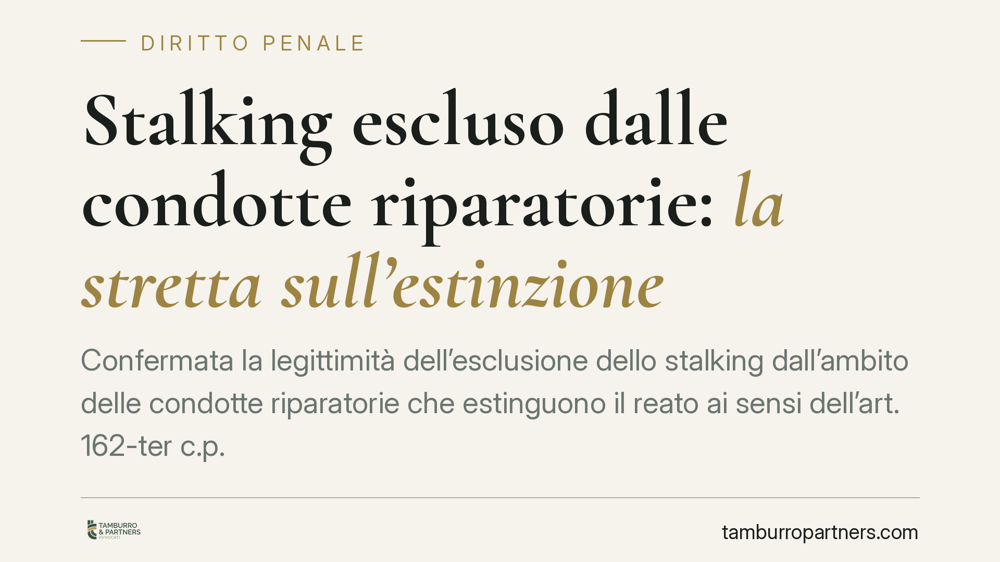

Stalking escluso dalle condotte riparatorie: la stretta sull'estinzione
Confermata la legittimità dell'esclusione dello stalking dall'ambito delle condotte riparatorie che estinguono il reato ai sensi dell'art. 162-ter c.p. Per chi è imputato di atti persecutori, il risarcimento del danno non apre più la porta all'estinzione. Una scelta che pesa sulle strategie difensive e valorizza la tutela della persona offesa nei procedimenti per stalking.

Il punto
La questione riguarda l'art. 162-ter del codice penale, la norma che consente l'estinzione di alcuni reati quando l'imputato ripara integralmente il danno prima dell'apertura del dibattimento. È stata ritenuta legittima l'esclusione dello stalking — gli atti persecutori puniti dall'art. 612-bis c.p. — dal perimetro di questa causa estintiva.
In concreto: chi risponde di stalking non può contare sul risarcimento e sull'eliminazione delle conseguenze del reato per ottenere una dichiarazione di estinzione. La riparazione economica non cancella il procedimento.
Inquadramento normativo
L'art. 162-ter c.p. prevede che, nei reati procedibili a querela soggetta a remissione, il giudice dichiari estinto il reato quando l'imputato ha riparato interamente il danno, mediante restituzioni o risarcimento, ed eliminato — dove possibile — le conseguenze dannose o pericolose della condotta. La riparazione deve avvenire entro l'apertura del dibattimento di primo grado.
La ratio dell'istituto è deflattiva: premiare chi ristora la vittima, alleggerendo il carico processuale. Il legislatore ha però costruito eccezioni. Lo stalking, pur potendo essere procedibile a querela in alcune ipotesi, è stato tenuto fuori dal meccanismo.
La scelta si spiega con la natura del reato. Gli atti persecutori non producono un danno che si esaurisce in una lesione patrimoniale o fisica isolata: incidono sulla libertà psichica e sulla serenità della vittima attraverso condotte reiterate, capaci di generare uno stato di ansia perdurante o di alterare le abitudini di vita. Un ristoro economico non neutralizza questo tipo di offesa, né garantisce che la condotta non si ripeta.
Implicazioni pratiche
Per l'imputato di stalking cambia l'orizzonte strategico. Fino a oggi la riparazione poteva essere valutata come leva per chiudere il procedimento in fase iniziale. Ora questa via è preclusa: il risarcimento resta rilevante, ma su altri piani.
Resta infatti utilizzabile come circostanza attenuante — l'art. 62, n. 6, c.p. valorizza la riparazione del danno prima del giudizio — e può incidere sulla determinazione della pena o sulle valutazioni relative alla sospensione condizionale. Ma non produce l'effetto estintivo.
Cambia il quadro anche per la persona offesa. L'esclusione rafforza la sua posizione processuale: la scelta di procedere non è più esposta al rischio di una definizione anticipata legata al solo pagamento. La tutela si sposta dal piano risarcitorio a quello dell'accertamento della responsabilità.
Va ricordato che, per lo stalking, la remissione della querela ha già limiti stringenti: in presenza di condotte aggravate o di gravità particolare la procedibilità è d'ufficio, e la remissione stessa può essere solo processuale. L'esclusione dall'art. 162-ter si inserisce in questa linea di irrigidimento.
Cosa fare in concreto
- Se sei indagato o imputato di stalking, non affidare la difesa alla sola riparazione economica. Non produce l'estinzione: valuta con il difensore le circostanze attenuanti e ogni altra via processuale.
- Documenta comunque le condotte riparatorie. Restituzioni, risarcimento e cessazione dei comportamenti restano rilevanti ai fini della pena e della sospensione condizionale.
- Se sei persona offesa, valuta con attenzione la querela e la sua eventuale remissione. Verifica se la condotta rientra tra le ipotesi a procedibilità d'ufficio, dove la tua scelta ha effetti diversi.
- Raccogli e conserva ogni elemento probatorio. Messaggi, testimonianze, documentazione medica sullo stato di ansia o sui cambiamenti nelle abitudini di vita sostengono l'accertamento.
- Rivolgiti a un difensore prima di ogni passo. Le scadenze — apertura del dibattimento, termini della querela — sono decisive e non recuperabili.
La direzione è chiara: nei reati che colpiscono la libertà e la sicurezza della persona, il legislatore riduce gli spazi per definizioni fondate sul solo profilo economico. Chi si trova coinvolto, da un lato o dall'altro del procedimento, deve muoversi con una strategia costruita sull'intero quadro processuale, non su una singola leva.
---
*Contributo informativo a cura di Tamburro & Partners - Avv. Giuseppe Tamburro. Non costituisce parere legale.*
Ogni condominio ha una storia a sé.
Se gestisci un'amministrazione e vuoi un confronto su una specifica questione condominiale, scrivi allo studio. Ti rispondiamo entro un giorno lavorativo.